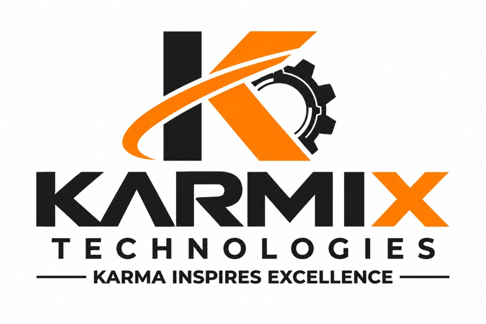

Software Solutions
Operator-friendly applications, machine interfaces, data acquisition, reporting and control logic.
Build an application ↗
SOFTWARE SOLUTIONS · INDUSTRIAL AUTOMATION · TEST SYSTEMS
Practical automation software and test solutions that help machines work smarter, processes run reliably, and production data stay connected.
WHAT WE DO
From a single test station to a connected production line, we build clear, dependable systems around your process.
Operator-friendly applications, machine interfaces, data acquisition, reporting and control logic.
Build an application ↗Functional testing, ECU testing, end-of-line checks and reliable pass/fail reporting.
Plan a test system ↗SQL and API-connected applications for station-level or multi-station production traceability.
Connect your data ↗Hardware communication, sensors, measurement systems and automation equipment integration.
Integrate a machine ↗SELECTED CAPABILITIES
A snapshot of the project areas KARMIX TECHNOLOGY can support. Scope and hardware are finalized to suit each customer application.
Charging application monitoring, control and test automation.
Automated ECU validation and communication testing over CAN and LIN using compatible interfaces, including Peak-System hardware where applicable.
Functional test workflows with operator prompts and clear test results.
Functional circuit testing and end-of-line test sequences with clear pass/fail results and data logging.
SQL- and API-based production records, serial-number tracking and results history for single-station or multi-station environments.
Measurement acquisition and result display for dimensional inspection.
Station-level automation, operator guidance, process checks and production data integration for assembly lines.
Flashing station integration for supported hardware such as ST-LINK, Renesas tools and PEmicro Cyclone programmers, depending on device and workflow.
Barcode workflows for identification, labels and production records.
Also supporting IoT applications, Melexis IC programming, automatic indexer machines, and custom test systems.
KARMA INSPIRES EXCELLENCE
ABOUT KARMIX
KARMIX TECHNOLOGY focuses on practical industrial software and automation solutions. We bring application logic, machine interfaces, test equipment and production data together in a way that is understandable for operators and useful for engineers.
HAVE A PROJECT IN MIND?
Tell us about your machine, test station or automation challenge.